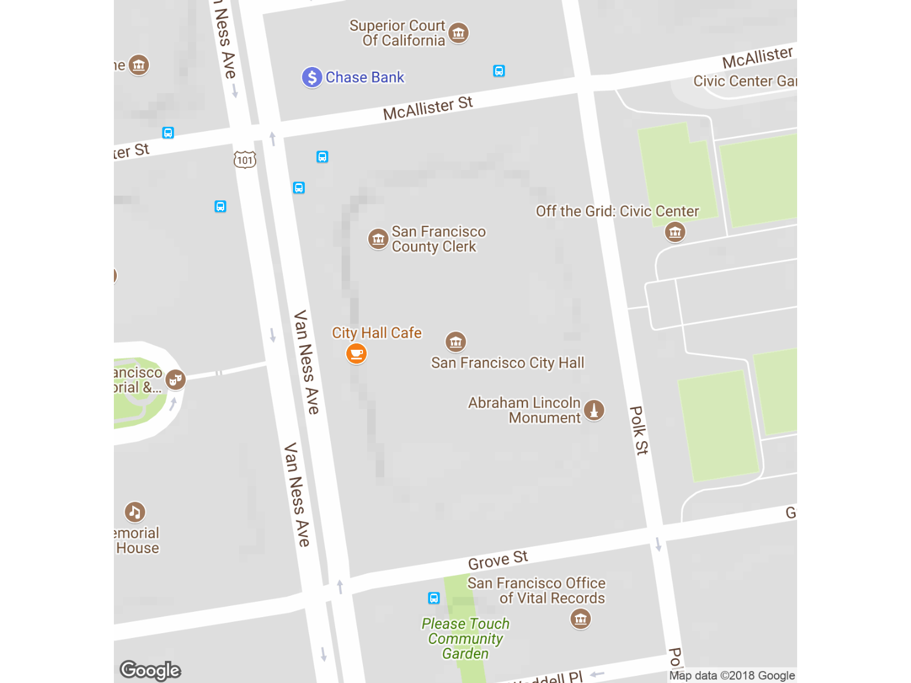
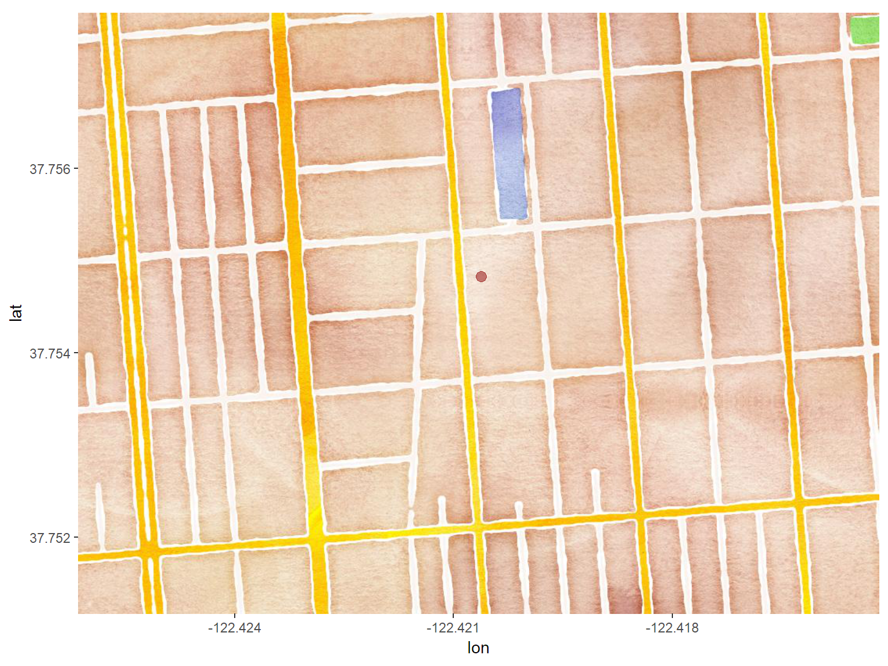

ggmap and leaflet
With ggmap,
qmap() is a good way to get started
qmap(location = "San Francisco City Hall", zoom = 18, source="google", messaging=FALSE)## Source : https://maps.googleapis.com/maps/api/staticmap?center=San+Francisco+City+Hall&zoom=18&size=640x640&scale=2&maptype=terrain&language=en-EN## Source : https://maps.googleapis.com/maps/api/geocode/json?address=San%20Francisco%20City%20Hall
add additional features, labels, legends, adjust view, colors,
you can save a ggmap object (plot definition) to a variable, and then plot it later with the print() function
use the + operator to build up the definition of your plot (a ggmap object)
Pieces of a ggmap object:
get_map() (tiles) + geom_xxxx (symbols) + annotations + scales + facets
get_map() downloads tiles (which you can save to a variable)
address_txt <- "1125 Valencia St., San Francisco, CA"
address_gc <- ggmap::geocode(address_txt, source = "google", output = "latlona", messaging = FALSE)
## Download tiles and save them to a variable
stamen_tiles <- get_map(location=address_txt, source="stamen", maptype="watercolor", crop=FALSE, zoom=17, messaging=FALSE)
## Make a plot of the tiles plus the geocoded address from before
ggmap(stamen_tiles) + geom_point(aes(x = lon, y = lat), data = address_gc, alpha = .5, color="darkred", size = 3)
Additional Notes
library(leaflet)
sf_lib_leaf <- leaflet(sf_lib_df) %>% addMarkers(~lon, ~lat, popup = ~Branch) %>% addProviderTiles(providers$CartoDB.Positron)
sf_lib_leafOther things you can customize in leaflet
More info: http://rstudio.github.io/leaflet/